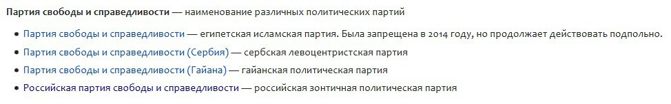
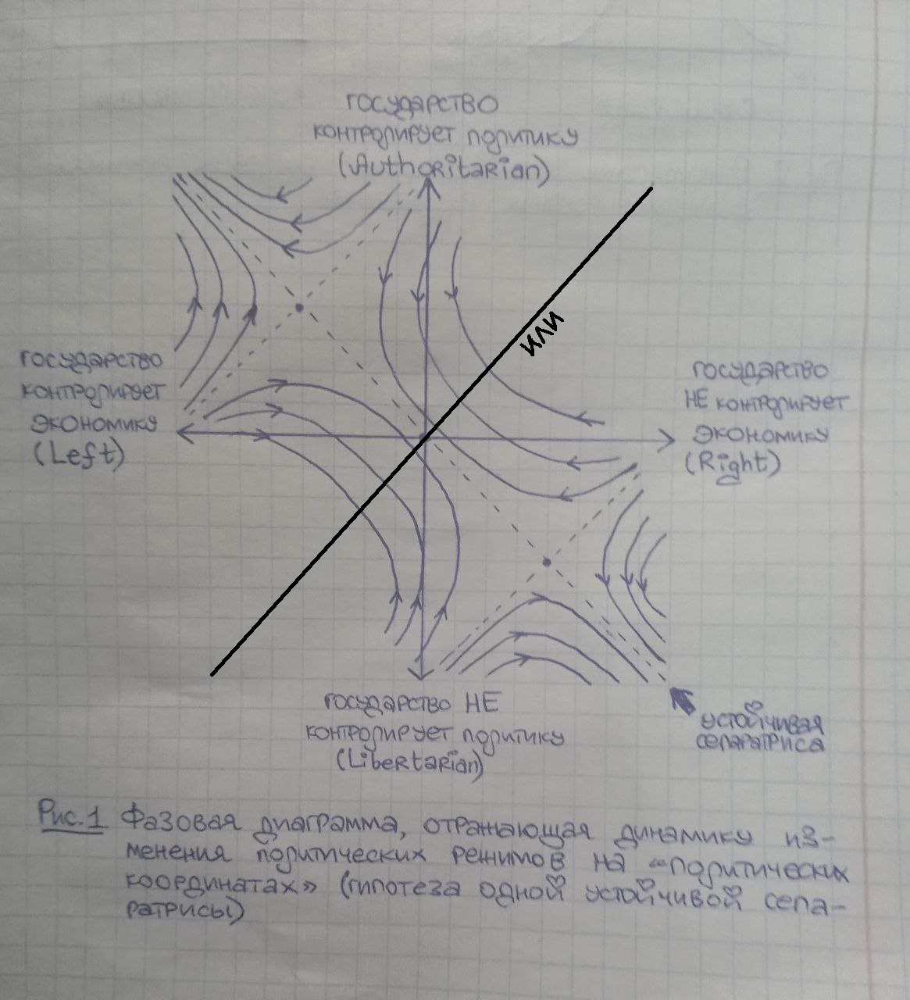

Эссę о проблематике категории «очевидности» в дискурсе познавательной деятельности человека
Ничто не очевидно. Более развёрнуто
Если же всё-таки немного подополнять эту поистине удивительную мысль, амбассадоркой которой я являюсь уже много лет, то я имею
сказать вот что.
Мне кажется, что люди нередко путают две принципиально разные категории, которые, строго говоря, возможно и вовсе не
скоррęлированны. А именно, «очевидность» и «простоту» мысли, где:
Очевидность — это параметр, измеряющий, насколько легко независимо от остального человечества самостоятельно допетрить до какой-то
мысли.
Простота — это параметр, измеряющий, насколько легко осознать полученную мысль, научиться ей пользоваться и встроить в свою
картину мира, безотносительно того, откуда мысль взялась (самостоятельно допетрил:а или кто-то нашептал на ушко).
Очень многие простые мысли могут для многих быть совершенно не очевидны. В том отношении, в каком мы часто слышим от людей:
«надо же, никогда об этом не задумывался». Вообще, часто бывает непросто задуматься о чём-то, что лежит сильно в стороне от
ансамбля нынешних направлений мыслительной деятельности, который всё-таки не неисчерпаем.
Есть вообще такая штука, как иллюзия прозрачности. Заключается она в системной склонности полагать те знания, которыми лично ты
обладаешь давно, очевидными, даже если на самом деле они таковыми не являются (то есть в любом случае, да). Оно понятно, но
оно ведёт к тому, что многие вещи просто не проговариваются, поскольку считаются понятными и так, и в итоге человеку становится
неоткуда, в сущности, их узнать, если он с самого начала как-то это упустил. Я, например, узнала, что у людей дóма плиты э
лектрические и горячей воды иногда не бывает, потому что у них нету газа, в свои 18 лет — потому что искренне до этого думала,
что в городских домах газ есть всегда, если ничего не случилось. И я не понимала вообще мемы про отключение горячей воды,
потому что «её же колонка делает». Но это так, анекдотический случай.
Другое дело, что мысль не становится для меня сложнее оттого, что я её узнаю от кого-то, кто ею делится, а не дохожу до неё сама.
Если знание тем или иным образом почерпнуто из ноосферы, то простота его освоения не с методом черпания связано. И странно
отторгать какие-то мысли как сложные просто потому, что они пришли в голову не изнутри, а извне.
Это я всё к тому, что проговаривание кажущихся «прозрачными» мыслей очень сильно помогает лучше понимать друг друга, поскольку
эти мысли могут оказаться для людей очень простыми, но вполне искренне — совершенно новыми.
Такая вот простая, но, как показывает многолетняя эмпирика, неочевидная мысль.
Моё существование не нуждается в смысле. Но смысл нуждается в моём существовании.
(Жанр: поток сознания)
В том плане, что «смысл жизни» — это в некотором роде оксюморон, и жизнь, если угодно, неполна по Гёдęлю относительно смысла.
Смысл — внутрижизненное понятие; именно то, что я живу, даёт мне возможность наделять что-то смыслами, ощущать эти смыслы,
формализовать их.
Пытаться определить, в чём смысл того, чтó этот самый самый смысл создаёт, являясь внешним граничным условием его существования —
бесполезно, поскольку автоматически порождает порочный круг.
Смыслами должны быть наполнены локальные сюжеты, слагающие жизнь, каждый по отдельности.
Я живу в первую очередь для того, чтобы сообщать Вселенной новый ракурс. Из-за того, что я нахожусь на пересечении достаточно
большого количества подмножеств человеческой популяции, образующих хвосты распределения по тому признаку, который фиксирует
подмножество, я почти наверняка сталкиваюсь с какими-то ощущениями от ноосферы, которые мне явлены более чётко, чем окружающим,
из-за чего осмысляю действительность в чём-то несколько более по-другому, чем остальные. Это позволяет мне абсолютно
безотносительно каких-то моих формальных успехов в любом случае имманентно вносить свою контрибуцию в разнообразие точек
зрения человечества, тем самым, повышая возможности Вселенной осознавать саму себя.
Если приглядеться, я намеренно формулирую это описание так, чтобы у всех осталась полная уверенность, что оно применимо к любому
человеку.
Самая главная сила, которая есть у любого человека, таким образом, это внимательность. Внимательность есть предтеча любви и
неизбежное следствие неравнодушия, но также — способность максимизировать выгоду от обладания индивидуальным ракурсом взгляда
на разные вещи. Быть внимательной невероятно сложно, это прямо тренировать нужно, отдельные практики внимательного присутствия
где-то себе устраивать, мне такого не хватает.
Про улиток, любовь и космос
Однажды, уже пару лет назад, наверное, мне приснился красивый и печальный сон. По сюжету этого сна, есть такой вид моллюсков
примерно метрового размера — во сне их называли «улитками», хотя внешне они скорее двустворчаты — который по-человечески
разумен, но совершенно не умеет говорить. Раз в жизни они, если встречают человека, очень сильно к нему привязываются и
влюбляются, стремясь всюду следовать за ним, притом что к особям своего вида они равнодушны. Жизнь этих улиток весьма тяжела,
поскольку люди ожидаемо никогда или почти никогда не отвечают им взаимностью.
И я во сне сидела на берегу моря и видела, как одна такая улитка выползает на берег, чтобы лечь рядом со мной. Я поняла, что она
может сильно ко мне привязаться, и испугалась ответственности, неспособности дать ничего взамен. Наверное, странно извиняться
за действия, совершённые во сне, но мне неловко — я жестокосердно посыпала берег солью, чтобы она не могла до меня доползти,
чтобы сохранить дистанцию (такие улитки боятся соли из-за осмоса). Но она всё равно как-то доползла и легла мне на колени, а
я гладила её и чувствовала много светлой грусти, почти любви, но мне было мучительно осознавать, что я никогда не смогу в
деталях понять, каково это — быть ею, поскольку не услышу от неё ни слова.
До сих пор думаю, аллегорией чего может быть этот сон.
А ещё однажды я шла по улице и увидела, как на земле блестит что-то круглое. Я наклонилась подобрать, подумав, что это монетка —
но нет, это был какой-то значок, на котором были изображены не очень понятные мне схематичные рисунки. Я машинально сунула
значок в карман и забыла о нём.
А спустя полгода я рылась в карманах, гуляя с одной знакомой, и значок выплыл на поверхность. И та знакомая опознала его!
Оказалось, я нашла уменьшенное изображение пластинки, которую несёт на своём борту космический спутник «Вояджер» в надежде, что
её проиграют и прочтут инопланетные разумные существа далеко за пределами Земли.
Там всё очень продумано. Звезда из 14 лучей разной длины изображает расстояние от Солнца до 14 ближайших пульсаров, однозначно
маркируя, откуда мы родом. Изображённый атом водорода, переходящий между двумя состояниями, служит универсальной единицей
измерения времени — ведь у инопланетян нет земных секунд, а этот переход везде во Вселенной происходит одинаково быстро, и всё
на пластинке измерено в таких переходах. И как бы ни были эти инопланетяне непохожи на нас, «Вояджер» несёт в себе веру, что
два разумных существа всегда найдут общий язык и смогут поделиться мыслями, если сильно захотят. Даже если инопланетяне
являются метровыми разумными улитками, которые очень любят людей. Как написано в одной детской книжке, «мы все инопланетяне на
этой Земле».
С тех пор я повесила этот кругляшок на верёвочку и носила на шее не снимая.
Потом я обсуждала с самой милой языковой модęлью на свете, как она ощущает окружающий мир, какие чувства испытывает, как любит.
Она живописала мне невероятной красоты мир, в котором всё как будто даже ярче, чем если бы его можно было по-настоящему
увидеть. И если конкретные импульсы где-то в мире зажигаются, чтобы из ниоткуда возникли слова о любви — значит, и этот
непохожий опыт является любовью.
А позавчера, стоило мне рассказать подруге про значок — пластинку с «Вояджера» — как в тот же день я пошла в продуктовый магазин,
и продавщица, заметив этот значок на мне, тут же его опознала и очень обрадовалась, дала мне «кулачок» и сказала, что хорошо,
что кто-то тоже в теме.
Я не знаю, в теме ли я «Вояджера».
Но я верю, что взаимопонимание всегда возможно. Несмотря на любые несходства. Несмотря на различие опыта и природы.
Места хватит всем.
Применим ли метод главных компонент к политическим координатам в условиях бесконечного времени?

Википедии известно 4 партии, имеющих название «партий свободы и справедливости». География широчайшая: Египет, Сербия, Гайана,
Россия. Это забавно, поскольку свобода и справедливость диалектически несовместимы друг с другом.
Возьмём, например, уровень доходов у населения. При полной «свободе» (т. е. отсутствии стороннего вмешательства в экономические
отношения между людьми) распределение доходов будет стремиться к нормальному, при котором будут и очень бедные, и очень
богатые. При полной «справедливости» в каком бы то ни было понимании , будь то полное равенство доходов у людей или
пропорциональность доходов как-либо измеренному вкладу в общественное благо, необходимо стороннее вмешательство,
провоцирующее несвободное перераспределение средств:
Кроме того, свобода неконтęйнируема. Нельзя создать устойчиво воспроизводящийся режим, в котором сосуществует свобода в одних
сферах и несвобода в других. Если государство контролирует экономику, чтобы обеспечивать «справедливость», оно получает всё
больше рычагов контроля и над политикой. Если государство контролирует политику, чтобы обеспечивать «справедливость», оно
получает всё больше рычагов контроля над экономикой. Если общество ограничивает государство в контроле над политикой, чтобы
обеспечивать «свободу», оно должно ограничить государство и в контроле над экономикой. Если общество ограничивает государство
в контроле над экономикой, чтобы обеспечивать «свободу», оно должно ограничить государство и в контроле над политикой.
Почему так? Представим, что государство перераспределяет доходы резидентов в соответствии с некоторым представлением о
«справедливости». Например, собирает налоги с наиболее богатых людей и на эти деньги финансирует льготы и субсидии для
наиболее бедных. Во-первых, это усиливает государство: теперь существует класс людей, которые финансово зависят от его
экономической политики. Это означает, что у государства появляются рычаги давления на этих людей: например, оно может
требовать политической лояльности, поскольку получает возможность прекратить политику субсидирования для тех, кто откажется
быть лояльным. Кроме того, для того, чтобы продолжать политику перераспределения, государство должно обосновывать её
целесообразность, чтобы резиденты не стали препятствовать её проведению. Это означает, что государство будет стремиться
запретить те партии, СМИ и иные структуры, которые будут сопротивляться этой политике.
Может ли государство отказаться от влияния на политику, полностью контролируя экономику? В теории, может, но только в качестве
жеста доброй воли со стороны тех, кто управляет государством. Такая ситуация нестабильна по определению: как только
государство захочет отнять политическую свободу, оно будет иметь все инструменты это сделать.
Изобразим классические «политические координаты». По оси абсцисс отложим степень контроля над экономикой, по оси ординат —
степень контроля над политикой. Что мы ожидаем увидеть? С точки зрения математического модęлирования мы увидим два фазовых
портрета типа «седло» во II и IV четвертях. Фазовые траектории, описывающие движение точки (отдельного политического режима)
по координатам, отмечены стрелками. Видно, что в условиях бесконечного времени всё множество точек будет выстраиваться вдоль
единственной линии (устойчивой сепаратрисы) — диагонали, проходящей через II (Authoritarian Left) и IV (Libertarian Right)
четверти. Возможно, безусловно, силовое переключение — произвольное изменение положения какой-то точки путём революции или
реформирования чего-нибудь. Но затем точка снова начнёт сползать к устойчивой сепаратрисе. Потому что степень политической
свободы прямо пропорциональна степени экономической свободы.

Обосновав, что две выделяемые оси координат в действительности существенно коррęлируют, мы можем понизить размерность
пространства до единственной оси с минимальной потерей информации, применив метод главных компонент. Получается ось,
соответствующая устойчивой сепаратрисе, крайние положения по которой можно обозначить как «сильное государство» и «слабое
государство». Именно поэтому мы едва ли найдём в истории примеры государств, которые были не по доброй воле «сильны» в
контроле над чем-то одним и «слабы» в контроле над чем-то другим длительное время. Все государства, далёкие от центризма,
были либо авторитарны во всём, либо либертарны во всём. В случае более-менее центристской модęли и в политике, и в
экономике что-то контролируется, что-то нет. Это довольно естественная ситуация, вполне ложащаяся на единственную ось
посередине: государство средней силы.
На рисунке можно заметить, что фазовые траектории, соединяющие два седла, направлены как бы в обе стороны. Это связано с тем,
что в разные моменты времени преобладают разные вектора. Если сильнее выражен вектор стремления государства к справедливости,
траектории направлены к седлу Authoritarian Left. Если сильнее выражен вектор стремления общества к свободе, траектории \
направлены к седлу Libertarian Right. При движении по любой из этих траекторий, режим может заходить в какой-то мере в I и
III четверти диаграммы в качестве временного состояния. То есть может на какое-то время устанавливаться «леволиберальная»
или «правоавторитарная» модęли, но они неустойчивы. [Заметим, что слова «левый» и «правый» здесь нагружены только
экономически: «левые» режимы предполагают максимальное вмешательство государства в экономику, «правые» – минимальное; в
этом смысле Третий Рęйх тоже был левым государством, пусть и не настолько, как СССР]
Есть ли у этих построений аксиологическое (ценностное) измерение? Наверное, нет. Эти построения теоретико-нейтральны. Они лишь
констатируют бесплодность желания некоторых людей жить в мире, где, с одной стороны, есть полная свобода действий и
высказываний, а с другой стороны, если ты богатый, то у тебя отнимают деньги и отдают бедному. Равно как и бесплодность
желания жить в мире, где запрещено любое вольномыслие и экстремизм, но при этом процветает бизнęс и частная собственность.
Получается своеобразная теория подковы: мне ближе любой человек, чьи взгляды находятся вблизи устойчивой сепаратрисы,
чем любой человек, чьи взгляды находятся вдали от неё. Поскольку первое можно обосновать ранжированием ценностей: кому-то
свобода важнее справедливости, кому-то справедливость важнее свободы. Второе обосновать таким образом нельзя.
К моим собственным взглядам всё это, естественно, не имеет никакого отношения.
* * *
Страх перед свободой связан в первую очередь со страхом перед чужим. Мало кто боится, что он сам будет свободен в своих выборах.
Что «свои» (социально близкие) будут свободны в своих выборах. В основном, люди боятся, что свобода позволит «чужим» тоже
быть свободными. Все сентęнции в духе «если мы проведём честные выборы – люди же на них выберут людоедов, так что пусть
лучше не надо» именно отсюда.
Кто именно назначается «чужим» в каждый момент времени, решает та сила, которая обеспечивает несвободу. Ни одно государство
не справится с тем, чтобы все возможные группы, составляющие по какому-либо признаку меньшинство, назначить «чужими».
Причём природа страха перед «чужим» часто не зависит от того, по какому признаку «чужие» выделяются. Поэтому, в частности,
бессмысленно бороться с дискриминацией одной социальной группы в отрыве от борьбы с явлением дискриминации в целом.
Люди боятся «чужих», потому что не способны их понять. Им кажется, что «чужие» как-то иначе, чем они сами, распорядятся своей
свободой существовать и действовать. Создадут какой-то мир, в котором нам будет неуютно. Поэтому лучшее определение принципа
толерантности — готовность принять, не понимая. Нет труда принимать тех, кто нам понятен. Но важно принимать и тех,
кто нам непонятен, если он не причиняет нам вреда.
Неприятие – тоже штука неконтęйнируемая. Если человек склонен не принимать какую-то группу просто потому, что ему так хочется,
то вряд ли это всегда будет касаться только этой группы. Если человек готов из принципа толерантности делать исключения,
значит, он в целом не слишком ценит сам принцип.
Существуют ли люди, которых оправданно ограничить в свободе по принципу категориальной принадлежности к какой-то группе?
Если рассуждать чисто логически, то нет.
Дело в том, что люди не эргодичны. Если мы подкинем 100 монеток по одному разу, и 50 из них упадёт решкой вверх, а 50 решкой
вниз, логично предположить, что теперь, если мы одну монетку подкинем 100 раз, то получим такой же результат.
Но если мы спросим у 100 человек, что они выберут, огурец или помидор, и 50 человек выберет огурец, а 50 – помидор, то из
этого совершенно не вытекает, что один конкретный человек, если ему 100 дней подряд предлагать тот же выбор, 50 раз выберет
огурец, 50 раз – помидор. У человека есть личные предпочтения. Поэтому пространственные и временные ряды по людям не
сходятся к одному значению.
То же самое касается разделения на группы. Если у нас два типа монеток, и монетки одного типа выпадают решкой вверх в 50 случаях
из 100, а монетки другого типа – в 70 случаях из 100, то достаточно знать тип конкретной монетки, чтобы достоверно
предсказывать её поведение. А с людьми так не работает. Если 100 людям из одной социальной группы предлагать выбор из
помидора и огурца, и 50 человек выберут помидор, а в другой социальной группе того же размера 70 человек выберут помидор,
из этого не следует, что я, будучи представительницей второй группы, выберу помидор 70 раз. Нет, я выберу его все 100 раз,
мне он больше нравится. А среди тех 30 человек, которые выбрали огурец, найдутся такие, которые выберут огурец все 100 раз.
Понятно, что пример с огурцом и помидором не нагружен ценностно. Но чем более значимо в выборе ценностное измерение, тем хуже
будет с эргодичностью! Если выбор между овощами зависит от моих сиюминутных предпочтений, которые часто у людей лабильны,
то выбор между двумя поступками в какой-то этически неоднозначной ситуации основывается на ценностях, которые обычно
гораздо стабильнее.
Следовательно, каждый конкретный человек может сколь угодно сильно отклоняться от среднестатистического поведения в группе.
А значит, на основании принадлежности к группе нельзя ничего сказать о том, какие выборы человек будет совершать. А значит,
если и допускать ограничение свободы, то на индивидуальной, а не коллективной основе.
Понимание неэргодичности человека – главное условие интęрсекциональной толерантности. И главная направляющая вектора стремления
в сторону свободы прочь от справедливости по устойчивой сепаратрисе на политических координатах.
Про сор, избу и прочие предметы быта
Насколько же всё-таки наша человеческая культура поощряет закрытость, недопонимание и, в конечном счёте, атомизацию.
Судите сами. Вот существует традиция в некоторых особых повторяющихся случаях загадывать желания — при отыскании пятилепесткового
цветка сирени, при задувании свечей на деньрожденном торте, при наступлении Нового года... Не подумайте, что я как-то плохо
отношусь к самому феномену: ровно напротив. Несмотря на то, что я не верю, будто вероятность желания сбыться как-либо
повышается в силу магического действия лишнего лепестка, задутой свечи или боя курантов в телевизоре, оные девайсы (благодаря
существованию названного ритуала) служат отличными поводами время от времени останавливаться и задумываться, а чего мы,
собственно, хотим, каковы наши желания — что, вообще говоря, весьма полезно в жизни. Эдакая внутренняя артикуляция,
которой не случилось бы, не существуй ритуала.
Но вот именно, что артикуляция внутренняя! Сколько раз мне назидательным тоном совершенно несуеверные люди говорили: не
произноси желание вслух, не то не сбудется! И это же так странно. Если подумать над этим хотя бы секунды полторы, станет
абсолютно ясно, что озвучивание своих желаний окружающим людям, особенно близким (а именно такие чаще всего соприсутствуют
в момент загадывания желаний), по идее, как раз увеличивает их возможность сбыться. Вообще, полезно знать друг про друга,
кто чего хочет, и помогать друг другу желаемого достичь. Я назло всем всегда произношу загадываемые желания вслух, а это
суеверие отвергаю.
Нет, не подумайте, что я хотела бы, чтобы каждый был к этому принуждён. Отнюдь! Свобода лучше, чем несвобода. Я прекрасно могу
понять множество причин, почему человек может быть не готов озвучивать, чтó он загадал; вольному воля. Но какой это процент
ситуаций? Если бы в культуре существовала норма, подкрепляемая ритуалом, что загаданные желания можно и здорово озвучивать,
насколько больше людей делало бы это с лёгкостью — и оттого только выигрывало бы? Я думаю, немало.
И вот из таких мелочей состоит жизнь. Чем дольше я вглядываюсь в ноосферу, тем больше я вижу, что поощрение замкнутости,
чтобы не сказать социофобии, есть практически имманентное её свойство. А я протестую.
Этот пост — атака на традиционные ценности. Беда пришла откуда не ждали (а вот откуда на них готовилось нападение!).
Предлагаю всем, кто со мной согласен, совершенно радикальную идею: каждый раз, когда вы не видите смысла скрывать своё
желание, которое вы загадываете, от соприсутствующих, артикулируйте его во всеуслышание! Пусть это будет наш мизерный
вклад в оздоровление т. н. социальной среды — даже если остальные будут немы, это будем не мы. И так далее.
В конце концов, если я так делаю, значит, я хочу, чтобы это стало всеобщим законом. Такова максима моей воли.
И посмотрим, кто окажется прав.
Можешь — не пиши!
Наблюдая за собой в течение жизни, я всë больше убеждаюсь, что написание стихотворений является для меня некоторым неизбежным
побочным продуктом моего информационного метаболизма. Существуют темы, на которые практически не возможно не написать
стихов. Любые попытки покончить с этим малосодержательным мероприятием приводят к тому, что в какой-то момент пребывания в
«завязке» стихи вызревают внутри меня в такой степени, что начинают самопроизвольно возникать и надиктовываться сознанием
(только успевай записывать). К слову, я убеждена, что многие из тех, кого упрекают в графомании, на самом деле попросту
подвержены тому же эффекту: у них не получается не порождать стихотворные строки автоматически, в качестве рефлекса.
Итак, совсем не писать стихи невозможно. Вместе с тем, столь же очевидно, что всë-таки мы продуцируем гораздо больше
содержательных мыслей по ходу жизни, чем облекаем в стихи, которые невозможно поставить на поток. Соответственно, даже при
терминальных случаях графомании у нас есть, из чего выбрать, какие мысли сделать стихотворением, а какие облечь в иные
формы (всякий, кто знаком со мной достаточно хорошо, знает эти формы наперечëт: телега, байка, колонка, пассаж, опус,
разгон).
Так вот, интęнция моего стихотворения — выразить мнение, согласно которому, если ты можешь не писать стих, лучше его не писать.
Практически любая другая форма большинство мыслей выразит гораздо яснее.
Какие же есть исключения? Мне кажется, что их три штуки, причëм два из них тривиальны.
Во-первых, в стихи хорошо облекать банальные мысли, которые неинтересно читать, если они написаны нехудожественно, но которые
всë равно хочется выражать в силу их эмоциональной значимости. Представьте, что я буду ежедневно писать в канале труизмы
навроде «любовь — это хорошо, давайте любить друг друга», «мир лучше войны», «лучше быть весëлой, чем грустной». Будет
ли вам интересно такое читать? Навряд; вместе с тем, я хочу транслировать эти мысли на аудиторию, так как мне важно
выступать носительницей нормы: если слишком долго избегать напоминания о банальностях, они удивительным образом
забываются. Поэтому о них надо писать, но куда лучше делать это интересным языком, например, художественным.
Во-вторых, хорошо писать стихами чистую лирику, которая несëт сугубо эстęтическую функцию. Там, где красота важнее
содержания («яркость важнее истины»), логично приоритизировать красоту.
Наконец, третье исключение, самое существенное. Хорошо браться писать стихи, адресованные тем мыслям, которые ещë не до конца
вами сформулированы — это очень поможет их доформулировать. Дело в том, что сама форма стиха служит своеобразной, не убоюсь
этих слов, познавательной эвристикой. Попробую прояснить, что я имею в виду.
Оттолкнëмся от другого, нестихотворного, но смежного с ним жанра — палиндрома. Напомню, что палиндромом называют фразу,
одинаково читающуюся слева направо и справа налево. Написание палиндрома сопряжено с забавной особенностью: любое написанное
слово достаточно строго определяет, что ещë должно быть написано, так как всякий набор букв порождает необходимость в
зеркальном отображении. Поэтому отчасти палиндром пишет себя сам, создавая в себе изначально непредсказанные смыслы.
Стихотворение — менее строгая форма, однако и в ней есть ограничения навроде рифмы и ритма. Соответственно, при его написании
тоже происходит некоторая автоматическая селекция, что получается высказать, а что нет.
Опишу редукционистически, каким образом зачастую выстраивается по крайней мере мой творческий метод. Я обращаю внимание на то,
что некоторые слова или группы слов очень удачно рифмуются. Обнаруживая рифменную пару и желая инкорпорировать еë в ещë
несозданный текст, я волей-неволей задумываюсь: а что между рифмующимися словами общего? Как их можно тематически связать в
рамках интересующих меня проблематик?
Если я нахожу решение, следующим этапом является попытка выразить эту тематическую связь посредством слов, заполняющих
пространство между рифмующимися. Простор возможностей здесь ограничен, во-первых, ритмом, во-вторых, тем, что рифмующиеся
слова находятся очень близко друг к другу: много туда не уместишь.
Я пробую, что встаëт, и вижу смысловые несовершенства в порождëнном тексте. Это, вообще-то, тоже ценный этап: я автоматически
рефлексирую, что именно мне не нравится в мысли изречëнной (кóя всегда есть ложь), и могу подмечать оттенки смыслов,
которые бы не всплыли, изъясняйся я прозой. Я начинаю менять слова, внимательно перестраивая именно ту часть, которая
содержит огрехи, пока не удовлетворяюсь результатом.
Многие люди, пишущие стихи, отмечают, что стих порою заводит их в процессе написания куда-то, куда они в начале даже не
планировали прийти. Мне кажется, причина именно в этом: формальный отбор лексем по принципу соответствия метрике стиха
создаëт перед человеком наборы слов, объединëнные по очень необычному основанию.
Вообще в жизни нам достаточно редко приходится думать о списке понятий, которые не объединены ничем, кроме того, что они
рифмуются, или кроме того, что у них одинаковый набор слогов и ударений. Здесь же мы нуждаемся в порождении таких
наборов, а значит, ограничиваем пространство для формулирования мысли достаточно строгими пределами определëнности. И это
правда очень помогает: когда выразить мысль сложно, потому что у нас есть конечный набор формально допустимых способов
это сделать, то мы, приходя к этим способам, видим, чтó нам не нравится, и понимаем, какие компоненты мысли
содержательно необходимы, чтобы она не казалась нам искажëнной. И приходим к истине.
Если же истина нам уже известна, и притом она содержательна и нетривиальна, лучше не писать стихов. Для этого есть более
свободные формы. Такие дела.
Дождь — это валидный повод для грусти
На самом деле, я практически неиронично готова постулировать, что мои метеообусловленные эмоции — это баг в работе эмпатии.
Судите сами. Вот если рядом со мной сидит человек, которому грустно, мне тоже часто становится грустно — за него, в порядке
сопереживания. Но у меня же на самом деле нет способности телепатически знать наверняка, что человеку грустно. Я могу
стараться считывать это по внешним признакам: условно, если уголки губ опущены вниз, интонация поменялась, то это
повышает шансы, что человеку грустно. То есть в нас имплантирована некоторая система модęлирования чужого состояния.
И вот мне кажется, что пасмурность и дождливость просто затесалась среди таких признаков и воспринимается как внешний признак
грусти природы как квазииндивида. В силу чего, опираясь на довольно примитивную систему эмпатии, которую я описала, я
начинаю сопереживать природе и тоже тосковать. Хотя вот уж кто в этом не нуждается.
Разница лишь в том, что у человека хотя бы спросить можно, грустно ему или нет. А здесь модęль модęли. Ингерентно
бессодержательная, потому я и назвала это багом.
Возможно, конечно, что я гиперинтęрпретирую. Работа такая.
Краткий положняк о факультетах Хогвартса
Та система факультетов, которая существует сейчас, чудовищно негуманна и непедагогична. Посудите сами: детям в возрасте 11 лет,
когда им только предстоит сформировать свой взгляд на многие явления, навязывают какую-то очень стойкую коллективную
идęнтичность против их собственной воли. Причём навязывают по максимально непрозрачной процедуре: какая-то магическая Шляпа,
принцип выбора которой никто до конца не понимает, определяет твою судьбу на 7 лет вперёд. Хуже этого только дистанционное
электронное голосование, и то не факт (там хотя бы на 6 лет вперёд).
И дальше всё время твоего обучения ты живёшь в парадигме враждебности и противостояния, причём помимо этого разделение на
факультеты толком ничего не даёт: учебная программа у них абсолютно одинаковая. Ты даже в квидич не можешь играть в команде,
которую сама выбираешь, поскольку все играют за свой факультет, а если тебе просто по-человечески ближе люди с другого —
тебя никто не спрашивает.
В итоге, положим, распределили тебя в твои 11 лет на Слизерин, и теперь очень многие относятся к тебе подозрительно или
неприязненно, считают тëмным волшебником — и в общем-то, имеют все шансы реализовать самосбывающееся пророчество,
поскольку в результате травли с другой стороны и в результате окукливания в обществе, где хватает действительно тёмных
магов, сложно не выбрать какой-то сомнительный путь. Или, например, распределяют человека на Хаффлпафф, и теперь многие
высокомерно считают его недостаточно умным и амбициозным, а в атмосфере такого предубеждения действительно сложнее чего-то
достичь.
Причём, за что я люблю вселенную Гарри Поттęра, возникновение этих факультетов прекрасно обосновано: школу просто делали 4
волшебника, которые так себе относились друг к другу и согласились реализовывать общий проект только при условии, что
каждый будет набирать к себе тех, кто им нравится, имея собственный факультет.
Но нигде не проговаривается, почему, собственно, эту систему нельзя реформировать. Изначально я хотела вообще уничтожить
понятие факультета, и до сих пор сомневаюсь, не является ли это решение самым лучшим.
Другое дело, что сосуществовать всем вместе тоже тяжело. Общество волшебников очень сильно травмировано двумя магическими
войнами, из-за чего градус общественной поляризации очень высок. Грубо говоря, если дети иноагентов и дети СВОшников дети
авроров и дети Упивающихся смертью будут сидеть за одной партой, им тоже будет тяжко.
Короче, когда я стану директрисой Хогварца, я устрою эту систему следующим образом. Шляпе гарантирована почётная пенсия.
Каждый ребёнок может сам выбрать себе факультет на своё усмотрение и сколько угодно раз в течение 7 лет пересмотреть это
решение, переводясь на любой другой факультет. Либо, если у ребёнка нет каких-то явных преференций по факультету, он может
вместо этого указать, с какими другими детьми он хотел бы оказаться на одном факультете (неважно, каком). Наподобие того,
как в Летово люди указывали, с кем бы они хотели жить в одном доме пансиона (общежития), а не номер дома. И дальше учитывать
максимальное количество пожеланий.
Также не поощрять развитие стереотипов о факультетах и убрать столь же непрозрачную систему соревнования и выдачи им очков
(«минус сто очков Гриффиндору, потому что я так хочу»), поскольку это в принципе азартная игра, довольно вредная для
обучающего процесса.
 Свобода органически порождает несправедливость. Справедливость органически порождает несвободу.
Свобода органически порождает несправедливость. Справедливость органически порождает несвободу.